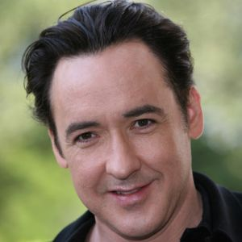
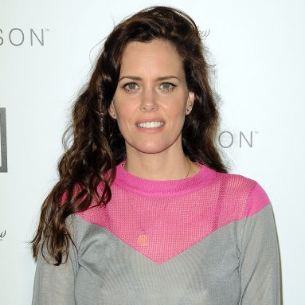
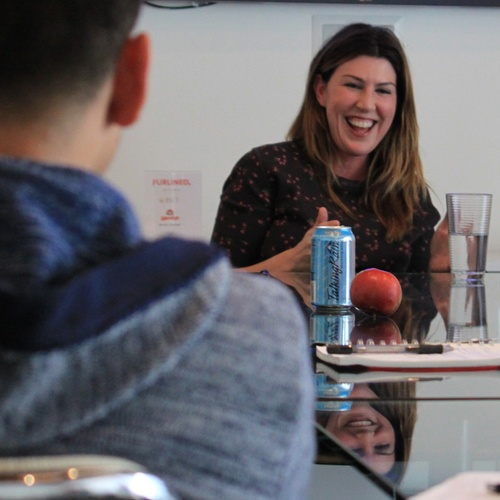
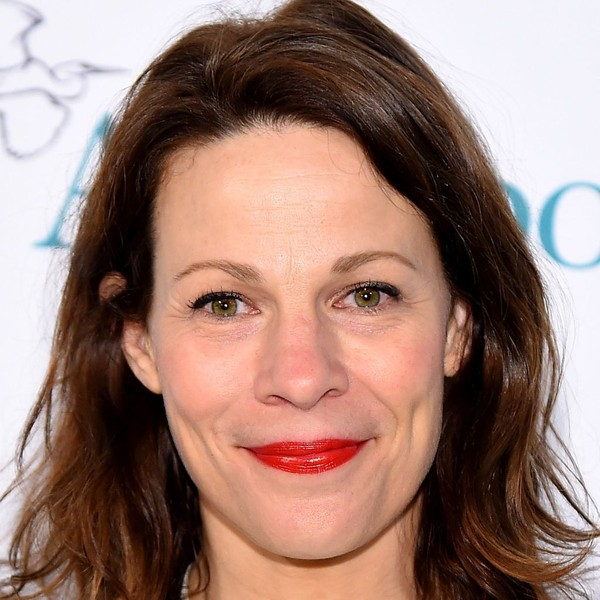
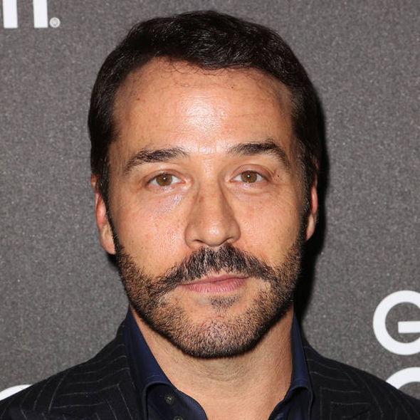

Lloyd Dodler

Diane Court
James Court

D.C.

Corey Flood

Mark
Aspiring kickboxer Lloyd Dobler falls for valedictorian Diane Court at their high school graduation ceremony. Lloyd lives with his sister Constance, a single mother, and has no plans for his future. Diane has had a sheltered academic upbringing and lives with her doting divorced father, who owns the retirement home where she works. She is due to attend a fellowship in England at the end of the summer.
Diane accompanies Lloyd to a party, surprising their classmates. During a dinner at the Court household, where Lloyd fails to impress Diane's family, Diane's father is informed that he is under investigation by the Internal Revenue Service. Diane takes Lloyd to meet the residents of the retirement home and he teaches her to drive. Their relationship grows intimate and they sleep together, to her father's concern. Lloyd's musician friend Corey, who has never gotten over her cheating ex-boyfriend, warns him to take care of Diane.
Diane's father urges her to break up with Lloyd, feeling he is not an appropriate match for her, and suggests she give him a pen as a parting gift. Diane tells Lloyd she wants to stop seeing him and concentrate on her studies. Devastated over the breakup, Lloyd seeks advice from Corey, who tells him to "be a man". Diane's father's credit cards are declined when he tries to buy her a luggage set.
At dawn, Lloyd plays "In Your Eyes" by Peter Gabriel, a song Diane loves, on a boombox under her open bedroom window. The next day, Diane meets with the IRS investigator, who explains that her father has been embezzling funds from his retirement home residents. He advises her to accept the fellowship, as matters with her father will worsen. After she discovers cash concealed at home, her father tells her he stole the money to give her financial independence. Distraught, Diane reconciles with Lloyd at the gym where he trains.
Some time later, Diane's father has been incarcerated. Lloyd visits him in a federal penitentiary and tells him he will go with Diane to England; he reacts with anger. Lloyd gives him a letter from Diane saying she cannot forgive him, but she arrives to say goodbye and they embrace. She gives him a pen, asking him to write to her in England. Lloyd escorts Diane, who is afraid of flying, on her flight.
Chicago Sun-Times
Rotten Tomatoes
Entertainment Weekly
Film Treat Brad Laidman
Los Angeles Times
"All For Love" - Nancy Wilson [4:37]
"Cult of Personality" - Living Colour [5:07]
"One Big Rush" - Joe Satriani [3:25]
"You Want It" - Cheap Trick [3:43]
"Taste the Pain" - Red Hot Chilli Peppers [5:04]
"In Your Eyes" - Peter Gabriel [5:23]
"Stripped" - Depeche Mode [6:41]
"Skankin' to the Beat" - Fishbone [2:49]
"Within Your Reach" - The Replacements [4:26]
"Keeping the Dream Alive" - Freiheit [4:14]
"Lloyd Dobler Rap [0:30]